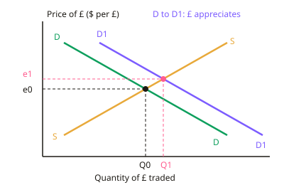

A-level Economics Year 13 · Topic 16
Exchange rates and international competitiveness
This topic explains how exchange rates are set, and why they matter for trade, inflation and growth.
We compare floating, fixed and managed systems, including currency unions like the euro area.
Then we look at what makes a country internationally competitive, and how purchasing power parity helps us compare countries fairly.
- 5 subtopics
- 242 questions
- Free: 16.1 notes and 10 questions
In this topic
- 16.1Exchange rate determination in floating systems: currency demand and supply and influencing factorsFree below · 44 questions
- 16.2Exchange rate systems: fixed, managed and currency unions; central bank interventionOpen in Full Marks · 58 questions
- 16.3Effects of exchange rate changes: competitiveness, inflation, growth, J-curve and Marshall-Lerner conditionOpen in Full Marks · 43 questions
- 16.4International competitiveness: productivity, unit labour costs and non-price factorsOpen in Full Marks · 44 questions
- 16.5Purchasing power parity, real and nominal exchange rates and cross-country comparisonsOpen in Full Marks · 53 questions
16.1 · Free notes
Exchange rate determination in floating systems: currency demand and supply and influencing factors

Key points
- The exchange rate is the price of one currency in terms of another (e.g. £1 = $1.25). In a floating system it is set by the demand and supply of the currency in the foreign exchange market, with no official intervention.
- Demand for a currency comes from foreign buyers of exports, inward FDI, portfolio (hot money) inflows, foreign tourists, speculators and central bank purchases. These are credits in the balance of payments.
- Supply of a currency comes from residents buying imports, outward FDI, outward portfolio investment, residents' tourism abroad and speculative selling. These are debits in the balance of payments.
- Relative interest rates: higher rates raise returns on domestic assets, so hot money flows in. This raises demand for the currency and causes appreciation; lower rates have the opposite effect. Quantitative easing tends to depreciate a currency.
- Relative inflation rates: lower inflation than trading partners improves price competitiveness and raises export demand. The currency tends to appreciate in the long run, as in purchasing power parity (PPP) theory.
- Speculation and confidence are often the dominant short-run influences. If traders expect depreciation they sell, so expectations can be self-fulfilling; this can cause overshooting and volatility. Safe-haven currencies appreciate in a crisis.
- The current account matters: a persistent deficit means net supply of the currency, giving downward pressure unless offset by financial inflows. Other factors include relative growth, FDI attractiveness, political stability and commodity prices for 'commodity currencies'.
- Terminology: under floating rates market-driven changes are appreciation or depreciation. Under fixed rates deliberate changes are revaluation or devaluation. Do not mix them up.
- Draw it as a demand and supply diagram with the exchange rate (e.g. $ per £) on the y-axis. A rightward shift of demand raises the equilibrium rate (appreciation); a rightward shift of supply lowers it (depreciation). Label the axes and shifts.
- The effective (trade-weighted) exchange rate index measures a currency against a basket weighted by trade shares. A fall from 100 to 92 is an 8% average depreciation.
- Evaluation: factors interact, so the net effect depends on their size. Financial flows (over $7 trillion traded per day) dominate trade flows in the short run, so rates are volatile and can deviate from PPP for years.
In more detail
- Worked conversion: if £1 = $1.25, then $1 = 1 ÷ 1.25 = £0.80. If the rate moves to £1 = $1.40, the pound has appreciated by 12%.
- Worked dollar price: a £40 UK export costs $50 at £1 = $1.25, but $56 at £1 = $1.40, so it becomes less price competitive.
- Interest rate example: if the Bank of England raises Bank Rate while the US Federal Reserve holds its rates steady, the pound tends to rise against the dollar, other things equal.
- Diagram tip: label the axes "price of £ in $" and "quantity of £". Higher UK interest rates shift demand for £ right, while more UK imports shift supply of £ right.
Practice
Exchange rate determination in floating systems: currency demand and supply and influencing factors: 10 questions
Pick an answer to check it, or open the answer for the explanation.
1. Which of the following would cause the pound to depreciate, ceteris paribus?
- A rise in UK demand for imported US goods
- Higher UK interest rates relative to the US
- A rise in US demand for UK-made cars
- Increased inward FDI by a Japanese firm
Show answer
A: A rise in UK demand for imported US goods. Buying US imports requires UK residents to supply pounds to buy dollars, shifting the supply of £ right and lowering its price. The other options increase demand for £.
2. The Bank of England raises Bank Rate while the ECB holds rates. Ceteris paribus, what is the likely effect on the £/€ exchange rate?
- Sterling is unchanged because rates affect only savings
- Sterling depreciates as UK borrowing costs rise
- Sterling depreciates as UK exports become dearer
- Sterling appreciates as hot money inflows raise demand for £
Show answer
D: Sterling appreciates as hot money inflows raise demand for £. Higher relative interest rates raise returns on UK assets, attracting short-term capital ('hot money') that increases demand for £ and causes appreciation.
3. A UK exporter sells a machine for £200. The rate falls from £1 = $1.25 to £1 = $1.10. What is the dollar price before and after (sterling price unchanged)?
- $220 then $250
- $160 then $182
- $250 then $275
- $250 then $220
Show answer
D: $250 then $220. Dollar price = £ price × rate: 200 × 1.25 = $250; 200 × 1.10 = $220. The lower dollar price makes the UK good more price competitive in the US.
4. Over the long run, which is most likely to cause a country's currency to appreciate, ceteris paribus?
- Persistently higher inflation than trading partners
- Persistently lower inflation than trading partners
- A rise in the country's imports of consumer goods
- A cut in interest rates to below those abroad
Show answer
B: Persistently lower inflation than trading partners. Lower relative inflation makes exports more price competitive, raising demand for the currency. This is the logic of purchasing power parity.
5. Which transaction adds to the supply of pounds on the foreign exchange market?
- A French firm importing UK whisky
- A UK pension fund buying US government bonds
- US tourists spending money in London
- A German firm buying a UK factory
Show answer
B: A UK pension fund buying US government bonds. UK residents must sell pounds to buy dollars to purchase US bonds (outward portfolio investment). The other options require foreigners to buy pounds.
6. In a free-floating exchange rate system the exchange rate is determined by
- the government's choice of an inflation target
- the central bank's target for the balance of payments
- a fixed link to the US dollar
- market demand and supply for the currency with no official intervention
Show answer
D: market demand and supply for the currency with no official intervention. Free floating means the price of the currency is set by demand and supply in the foreign exchange market. Central banks do not buy or sell to influence it.
7. Traders widely expect the euro to weaken next month. What is the likely immediate effect on the euro?
- It strengthens as sellers become scarce
- It weakens as traders sell euros, making the expectation self-fulfilling
- No change, since speculation affects only short-term interest rates
- It strengthens because exports will be cheaper
Show answer
B: It weakens as traders sell euros, making the expectation self-fulfilling. Expected depreciation prompts speculators to sell the currency now, increasing supply and lowering its price, so expectations can be self-fulfilling.
8. Which statement about exchange rate terminology is correct?
- Revaluation is a market-driven rise under floating rates
- Depreciation is a deliberate official cut in a fixed rate
- Depreciation is a market-driven fall in a floating currency's value
- Devaluation is a market-driven fall under floating rates
Show answer
C: Depreciation is a market-driven fall in a floating currency's value. Depreciation and appreciation describe market-driven changes in a floating rate. Devaluation and revaluation are deliberate official changes to a fixed or pegged rate.
9. Sterling's trade-weighted index falls from 100 to 92 over a year. What does this show?
- Sterling fell 8% against every currency
- UK exports fell by 8%
- Sterling rose 8% against its trading partners
- Sterling fell by 8% on average against a weighted basket of currencies
Show answer
D: Sterling fell by 8% on average against a weighted basket of currencies. A trade-weighted (effective) index measures a currency against a basket weighted by trade shares. A fall from 100 to 92 is an 8% average depreciation, not necessarily against each currency.
10. A central bank cuts interest rates and begins quantitative easing while other central banks do not. What is the likely effect on its currency?
- Appreciation as money supply rises
- Depreciation as lower returns reduce demand for and increase supply of the currency
- Appreciation because investment will rise
- No effect, because money supply does not affect exchange rates
Show answer
B: Depreciation as lower returns reduce demand for and increase supply of the currency. Lower interest rates reduce returns on domestic assets, so hot money flows out. Demand for the currency falls, supply rises and the currency tends to depreciate.
Keep going in Full Marks
Full Marks has 44 questions on Exchange rate determination in floating systems: currency demand and supply and influencing factors (34 more than here), set out in practice levels. You also get notes and 3D models for all 5 subtopics of Exchange rates and international competitiveness, plus games, timed exams and past papers.